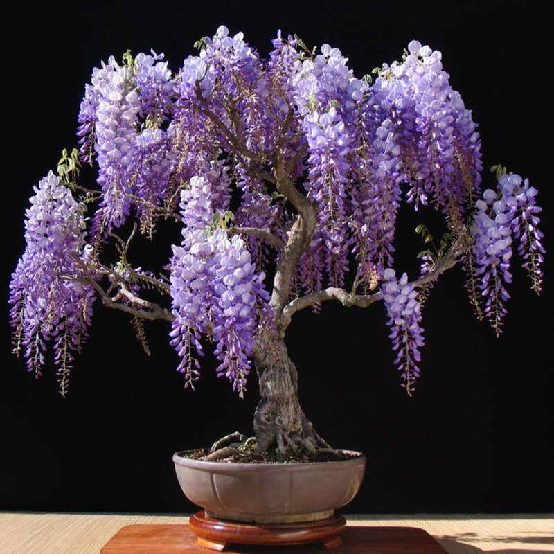

Jacaránda – древовидное растение из семейства Бигониевых, произрастающее в Южной Америке,
Африке и в Австралии в тропических и субтропических равнинных и горных районах.
Название «жакаранда» с португальского переводится как «имеющая твердую древесину»